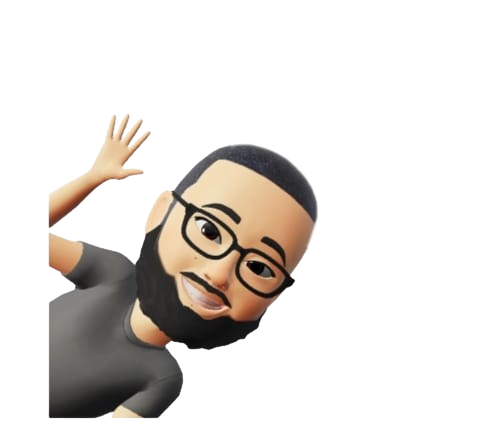

Bom dia, me chamo Dener Cardoso Verçosa, tenho 25 anos e moro na Região do Capão Redondo, zona Sul de SP Desde pequeno sempre fui muito ligado em tecnologia, eu era daquelas crianças que só saia da frente do computado r ou vídeo-game quando a mãe mandava eu sair Mas eu acabei não seguindo o caminho da tecnologia após o fim do ensino médio e só fui me encontrar novamente com a área da tecnologia no ano passado, que foi quando comecei a pesquisar as áreas e procurar conhecimentos de forma propria. Desde então, eu comecei a fazer alguns cursos introdutórios como Lógica de Programação e Desenvolvimento Mobile Android e agora estou finalizando o Bootcamp da Generation como Desenvolvedor FullStack Java,onde eu pude aprender sobre JAVA, MySQL, HTML, CSS, Spring, e Git e desenvolver minhas softskills, como persistencia, comunicação, trabalho em equipe, orientação aos detalhes entre outras. Falando um pouco sobre minhas experiencias profissionais... Já trabalhei como Auxiliar Administrativo na Caixa Economica, onde eu era responsável por auxiliar os gerentes, ajudava os clientes no Caixa Eletronico e com dúvidas no geral. Trabalhei também com Telemarketing para o Santander, onde eu fazia cobrança de produtos bancários e aprendi diversas estratégias de negociação e muito sobre os sistemas e produtos bancários. Também já tive experiencia com vendas na internet, onde eu era o responsável pela criação do site, vendas, trafego pago, midias digitais, suporte e compras... Foi uma experiencia muito enriquecedora, onde eu pude aprender sobre várias áreas distintas e desenvolvi bastantes minhas softskills.
